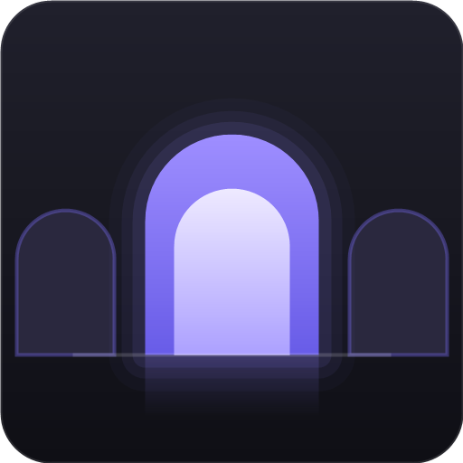

Obsidian utility · Windows · Tauri 2
Old Norse hvelfa: to vault, to arch.

A hotkey-summoned tile board for your Obsidian vaults. Press a key, see your vaults as tiles, hit a number or click. The vault opens, or its existing window comes to front, and the board gets out of your way.
Open vaults carry an aurora edge. Recency puts the vault you were last in at 1.
Obsidian's own vault switcher is modal and slow, and the tray flyout is an unlabelled list. If you run many vaults, switching should cost one keystroke and one glance. That is all hvelf does.
Hvelfa is the Old Norse verb for vaulting: to arch over something (and, said of a boat, to capsize, which feels right for a tool you reach for when you are drowning in windows). Its descendants still carry the meaning today. A Norwegian hvelv is a bank vault; an Icelandic hvelfing is a vaulted ceiling. One old word spans the same pun Obsidian built on: strongrooms that keep valuables, and arches that hold up a roof.
The icon is the app doing its job: an arcade of vault doorways, the centre one lit. Summon the board and that is what you see, a row of your vaults with the open ones glowing.
obsidian://
URI if it is not.× that closes that vault's window. It is an ordinary close, so
Obsidian saves state, and the renderer gives back the RAM it was holding.Vaults come from Obsidian's own registry (obsidian.json), so there
is nothing to set up and the board always matches what Obsidian knows.
Requires Rust, with the MSVC toolchain on Windows. No Node, no npm.
cd src-tauri
cargo build --releaseThe binary lands in src-tauri/target/release/hvelf.exe. Run it once
and it sits silent until the hotkey.
%APPDATA%\hvelf\config.json, created with defaults on first run:
{
"hotkey": "alt+grave",
"quickLaunch": "alt+1",
"hideOnBlur": true,
"hide": ["OldVault"],
"groups": [
{ "name": "research", "vaults": ["melt", "cDFT", "AISTATS"] },
{ "name": "admin", "vaults": ["taxes"] }
],
"deepLinks": { "melt": "index" }
}Hotkeys combine ctrl, alt, shift and
win with a letter, a digit, an f-key, or grave. The name
grave binds the physical key under Esc on any keyboard layout: hvelf
registers keys natively by scancode rather than through a US-mapped name table, so
it works the same on UK, DE or FR layouts. Field notes for the rest are in the
README.
Windows is the supported platform today.
On macOS the app compiles and the basics work: vaults are discovered from
Obsidian's registry, tiles launch and focus vaults through the
obsidian:// URI, and the tray menu runs. Three things do not work
there yet: the global hotkeys, live open state, and focus-based recency, which
falls back to Obsidian's last-opened timestamps. The last two need macOS's
accessibility permission to read window titles, so they will arrive
permission-gated with a graceful fallback. Until then, treat macOS as launch-only.
Linux is untested. Autostart and themes are on the roadmap for every platform.